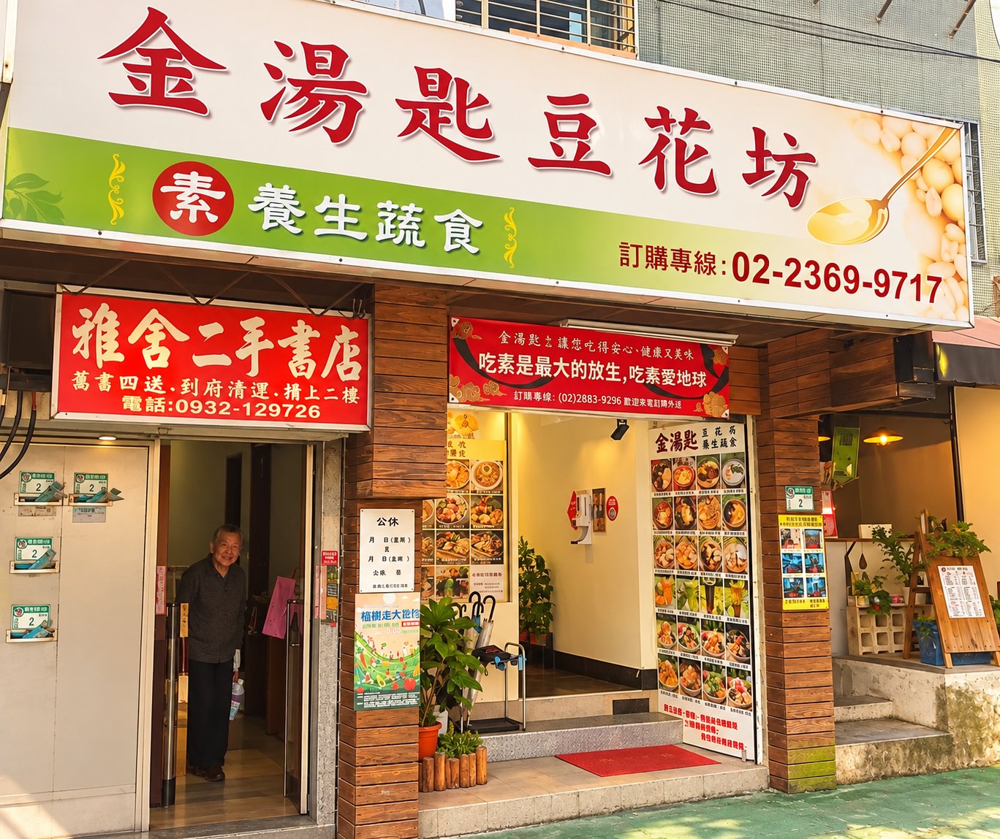
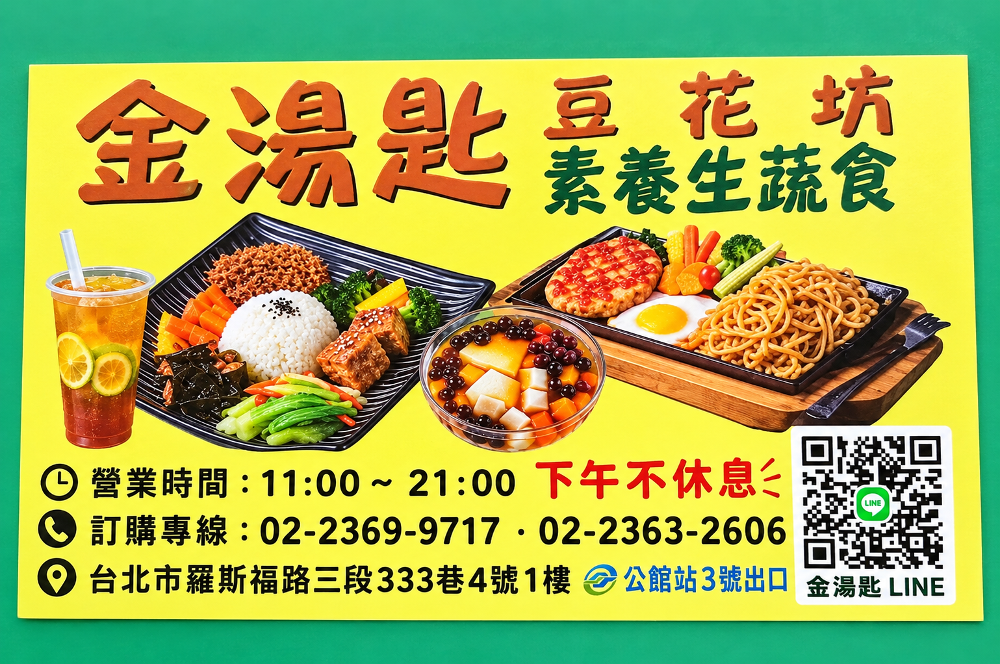
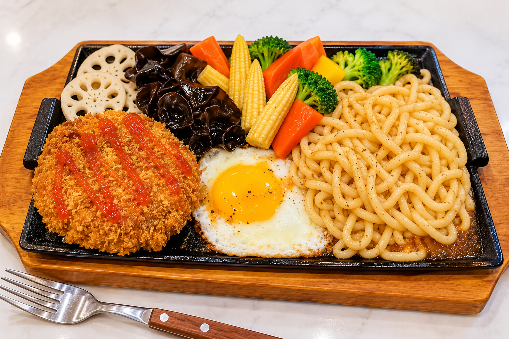
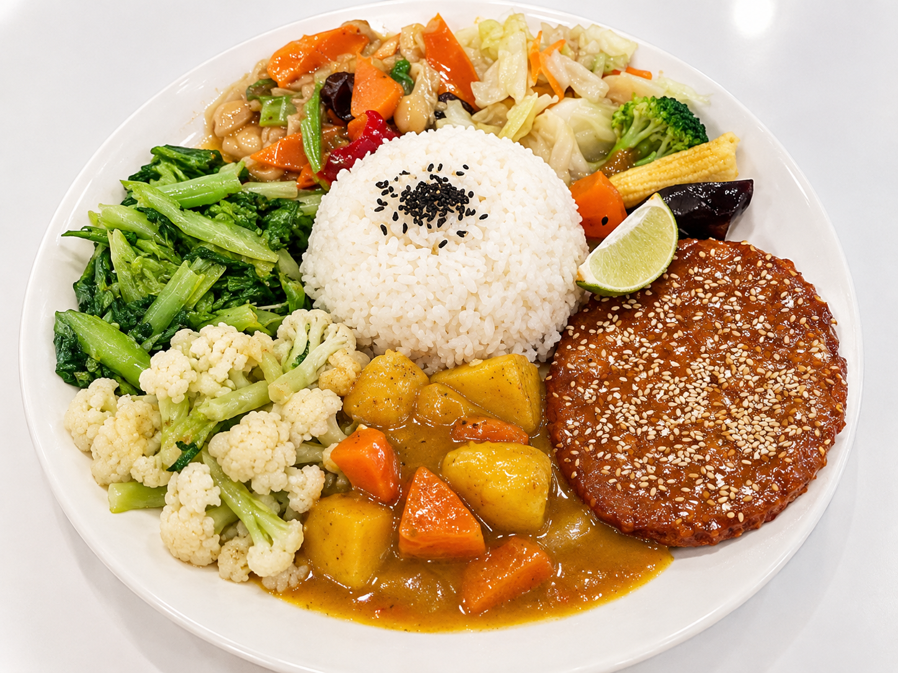
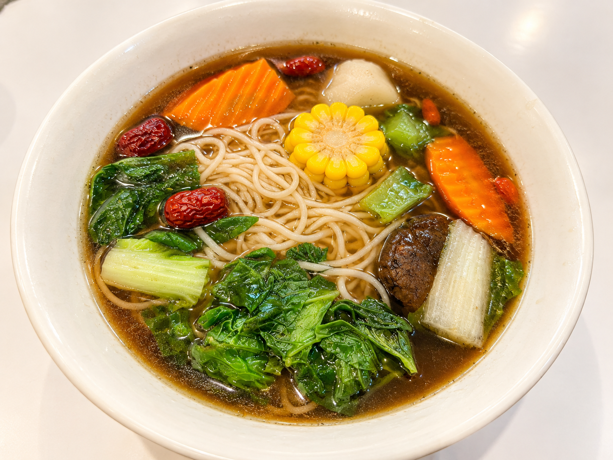

SHOP INFORMATION
店家資訊
台北市羅斯福路三段333巷4號1樓
11:00 ～ 21:00
店家資訊標示下午不休息02-2369-9717
02-2363-2606
素食・蔬食・豆花・冰品

店家資訊看板
店家現場提供的營業資訊與聯絡方式， 實際營業狀況仍請以店家最新公告為準。
TRANSPORTATION
交通方式
捷運公館站 3 號出口
搭乘台北捷運松山新店線至「公館站」， 從 3 號出口前往羅斯福路三段333巷。
JASON'S PICK
水哥推薦

鐵板香酥猴頭菇排麵
這次到金湯匙豆花坊， 選擇了鐵板系列的香酥猴頭菇排麵。 一盤裡除了主餐之外， 還搭配麵食與多樣蔬菜， 色彩豐富，看起來也很有飽足感。
DINING NOTES
實吃心得
每次尋找素食餐廳，我很喜歡看看一家店除了主餐之外， 還能提供多少不同的選擇。
金湯匙從排餐、麵食、湯品到豆花、冰品都有， 對想在公館、台大附近找蔬食的人來說， 菜色選擇算是相當豐富。
✎ 實際口味心得會隨每次用餐持續補充， 網站內容以水哥實際用餐紀錄為主。
PHOTO JOURNAL
水哥實拍


LOCATION
店家位置
金湯匙豆花坊
台北市羅斯福路三段333巷4號1樓
🚇 捷運公館站 3 號出口
MORE STORIES